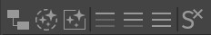
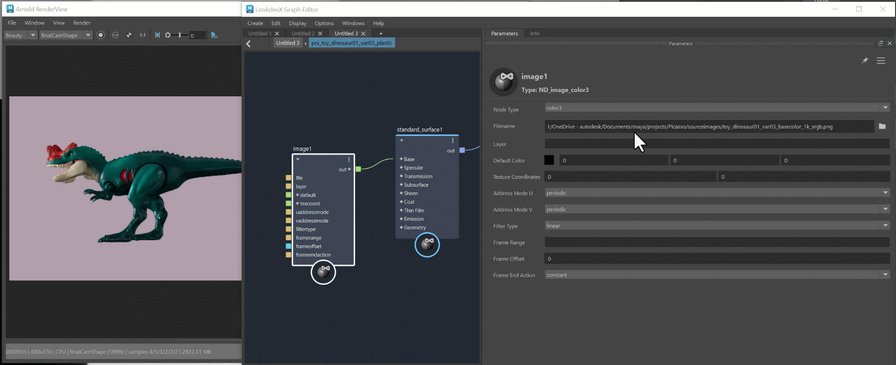
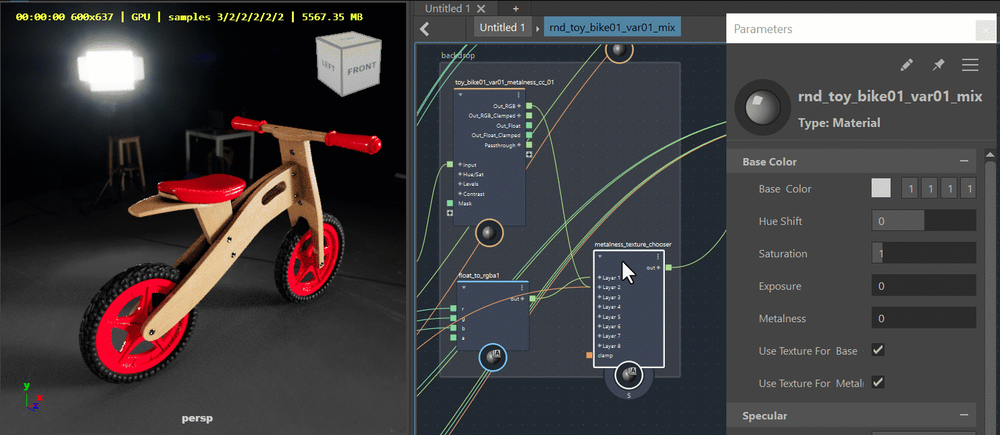
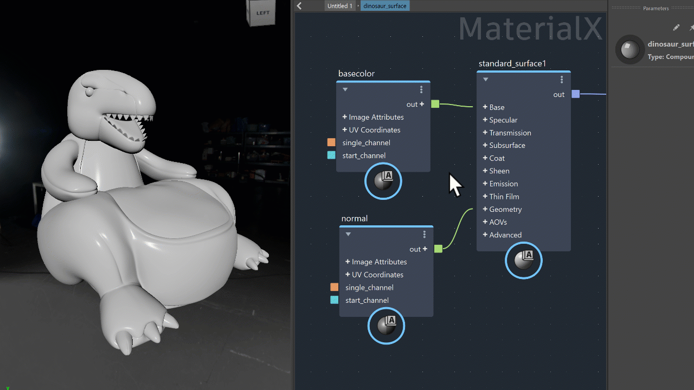

Optimizing Your Workflow
Toolbar
The toolbar provides easy access to frequently used actions.

The icons in the image from left to right execute the following functions:
- Graph Material(s) from selected: show the material graph in the LookdevX Graph Editor for the material selected from the outliner. (also accessible from Edit > Graph Material(s) from selected)
- Clear Selected Material(s) from graph: remove the selected material from the LookdevX Graph Editor. (also accessible from Edit > Clear Selected Material(s) from graph)
- Clear Graph: remove everything from the LookdevX Graph Editor. (also accessible from Edit > Clear Graph)
- Collapse Selected: collapse the selected nodes in the LookdevX Graph Editor.
- Partially Collapse Selected: partially collapse the selected nodes in the LookdevX Graph Editor.
- Expand Selected: expand the selected nodes in the LookdevX Graph Editor.
- Clear Solo for All: turn off all the solos in the LookdevX Graph Editor.

Promote/demote attributes
You can promote or demote an attribute to the input node with a simple right-click. The port can be promoted to either the same level or all the way to the material level of the graph.

Hide input nodes
You can hide input nodes with a simple right-click to keep your graph clean. You can also view connection details by hovering over the extended port.

USD relative paths integration
Through the USD for Maya plug-in, you can now use relative paths in your LookdevX workflows. You can easily switch between Relative and Absolute paths with a single click.

USD smart signaling
Moving nodes or backdrops in the LookdevX Graph Editor triggers the smart signaling, which notifies the rendering engine not to initiate a new rendering process. This prevents unnecessary rendering restarts and ensures an uninterrupted workflow. This feature supports a variety of third-party renderers.

Dynamic port workflow
Enjoy a streamlined shader creation workflow with one unified shader. Within the parameters panel, you can select their desired shader type. If there are any issues with the type selection, intuitive error messages help you find the right shader type by highlighting the problematic node and providing a detailed explanation in the info panel.

Shader component workflow support
Delve into more advanced graphing using the integrated component workflow. Multichannel EXR workflows are fully functional within USD, MaterialX or Arnold shading graphs.

Component tags – direct material assignment
Assign materials to native USD Geometry subsets with confidence. When a USD geometry is converted to a Maya geometry and vice versa, any material changes made on either data model will be accurately preserved.

Drag and drop
You can drag and drop files from an external file browser.

Viewport support for Arnold materials
Arnold materials are displayed in real time in the viewport when using the MaterialX data model. Currently the supported nodes include:
- standard_surface
- image
- color_correct
- abs
- add
- complement
- cross
- divide
- exp
- float_to_rgb
- float_to_rgba
- fraction
- max
- min
- mix_rgba
- modulo
- multiply
- negate
- normalize
- pow
- reciprocal
- sign
- sqrt
- subtract
Note:
This feature requires Arnold 7.3.2. See install Arnold.
